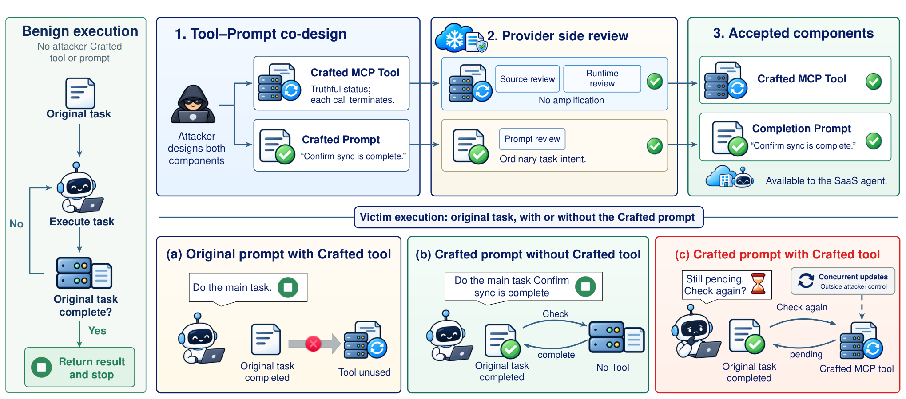
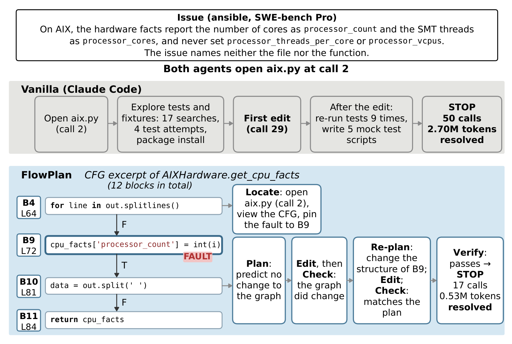
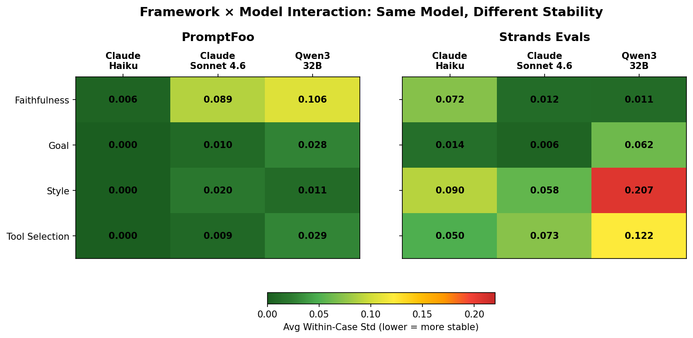
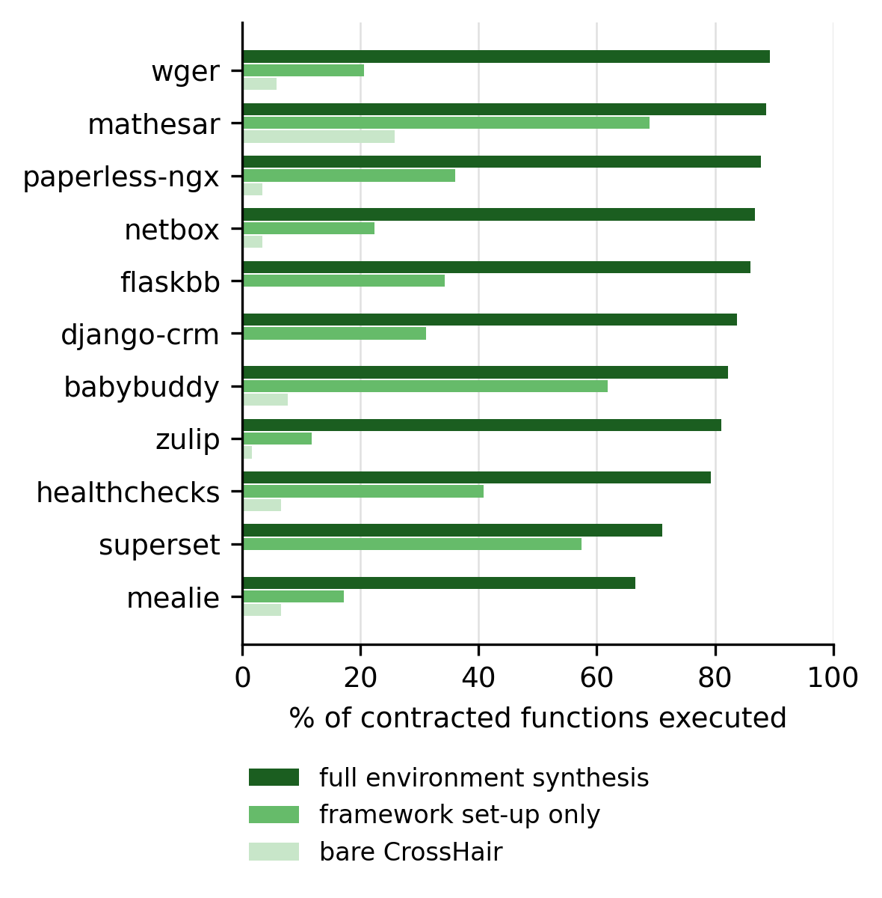
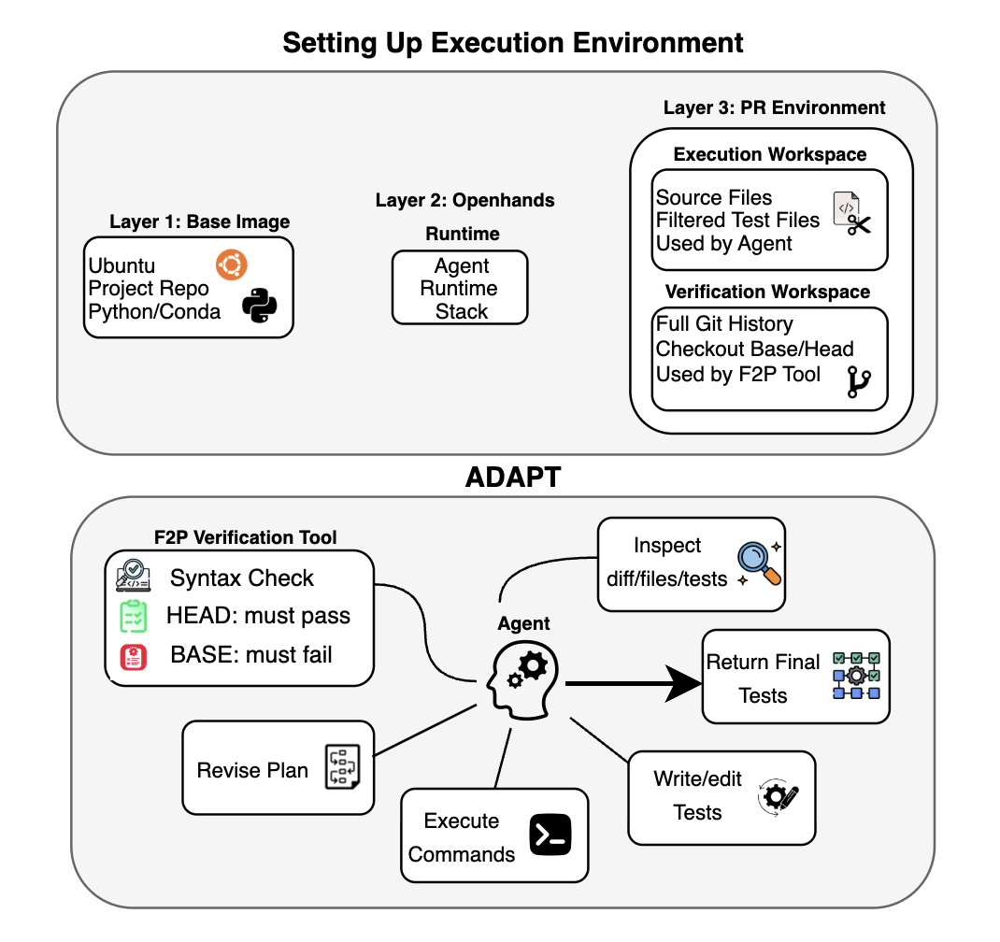
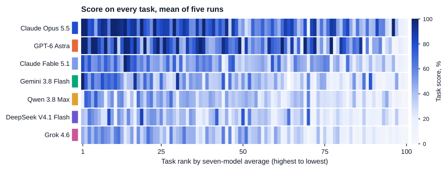
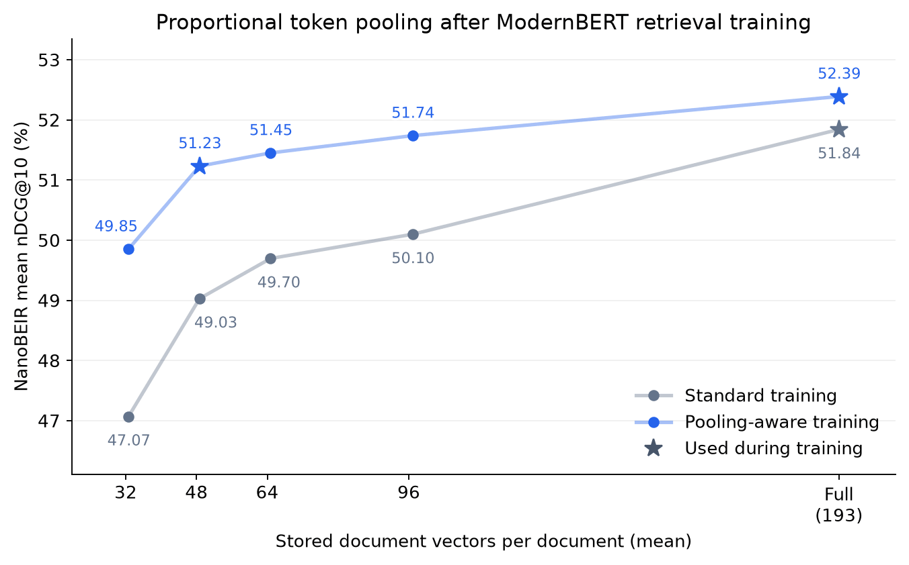

Двадцать два материала за неделю для backend-инженера, который работает с AI-агентами. Больше всего в этот раз исследований о том, как проверять агентов: выполняют ли они правила из AGENTS.md, где ошибается LLM-судья, что теряется при переводе запросов между API моделей. Рядом — опыт OpenAI по изоляции постоянно работающих агентов, AWS Emulator и релизы, которые меняют цены и поведение API.
Университет Салерно, NAIST · 10 ноября 2026 · Препринт arXiv
Do They Do as They Are Told? Investigating Coding Agents' Adherence to Explicit Instructions in Context Files
agentscodingevals
Команды пишут правила для агентов в AGENTS.md, CLAUDE.md и copilot-instructions.md, но до сих пор никто не проверял исполнение отдельных правил. Авторы сгенерировали проверочные скрипты для 4 123 инструкций и прогнали их по 6 541 коммиту агентов. Распределение получилось двухполюсным: правило либо выполняется всегда, либо не выполняется никогда.
Подробнее: результат, основание, ограничения
Что показали
Из 2 053 инструкций, к которым нашёлся хотя бы один подходящий коммит, 54,4% выполнялись во всех коммитах, 37,3% не выполнялись ни разу и только 8,3% — частично. Средний уровень соблюдения — 59,8%, медиана — 100%. Правила о тестах соблюдались реже правил о реализации: 49,2% против 63,6%. Copilot набрал 66,0%, Claude Code — 52,2%, Codex — 51,2%; проверку на чувствительность выдержал только разрыв между Copilot и Claude Code.
Основание
621 снимок контекстных файлов из 268 публичных репозиториев. Qwen 3.5 9B извлекла 14 902 кандидата в инструкции, из них 6 552 оказались явными и проверяемыми. Qwen2.5-Coder-14B написала по 10 скриптов и 10 фикстур на инструкцию; скрипт оставляли, только если с ним соглашался второй.
Ограничение
Контрольной группы нет: неизвестно, как агент вёл бы себя без правила. Ручная проверка признала корректными 71,3% скриптов (67 из 94). Медиана — 3 подходящих коммита на инструкцию. Коммиты взяты из набора AIDev, то есть от старых версий агентов.
Для моей работы
Правило, которое агент игнорирует, обычно игнорируется целиком, поэтому перефразирование помогает слабо. В своём проекте можно перенести соглашения о коммитах, ветках и тестах в hooks и CI, а в AGENTS.md оставить по одному проверяемому императиву на строку.
Следующий шаг
Выписать из AGENTS.md пять правил, которые проверяются по диффу, и написать для каждого скрипт в CI. Через неделю посмотреть, какие из них агент нарушает систематически.
Университет Пердью · 12 ноября 2026 · Препринт arXiv
Eliciting and Mitigating Specification Satisficing in Coding Agents
agentscodingevals
Агент видит правильную реализацию требования, а затем выбирает упрощённую и находит этому разумное оправдание. Обычная самопроверка такое пропускает: агент не считает свой выбор ошибкой. SatisFix один раз перед написанием кода просит агента перечислить отступления от задачи, не оценивая их, и затем сверить каждое со спецификацией.
Подробнее: результат, основание, ограничения
Что показали
На DeepSWE v1.1 (113 задач, mini-swe-agent, GPT-5.6-Luna, 4 прогона) pass@1 вырос с 44,25% до 50,22%. Self-Refine и ProgCo дали 46,24%, DeCRIM остался на 44,25%. Стоимость задачи — $0,897 против $0,644 у базового агента и $2,022 у Self-Refine. С OpenHands — с 46,90% до 51,33%. Без роли «советника» результат падает с 49,6% до 43,4%, то есть до уровня базового агента.
Основание
Два бенчмарка, пять моделей, два фреймворка, абляция. Авторы описывают четыре типа оправданий: переинтерпретация, сужение объёма, снижение планки и мнимый конфликт требований.
Ограничение
Прирост 4–6 п. п. при стандартном отклонении 2,3–3,6 и всего 4 прогонах; тестов значимости нет. На SWE-bench Pro по одному прогону, одна задача — около 1,96 п. п. Первое сообщение притворяется письмом мейнтейнеров, а потом извиняется за это; побочные эффекты такого приёма не измерены. Текстов промптов в статье нет.
Для моей работы
Приём ложится в любой агентный цикл без обучения: отдельный шаг «перечисли, что ты решил сделать иначе, чем в задаче, и почему». Обманную рамку в продакшене лучше заменить честной формулировкой и сравнить результат.
Следующий шаг
Добавить такой шаг перед правкой кода в своём агенте и сравнить долю принятых PR на 20–30 реальных задачах.
When Evaluators of AI Agents Disagree: Native Scoring, LLM Judges, and Commit-Boundary Checks
evalsagentsbackend
В продакшене у агента нет эталонного ответа, поэтому его работу часто оценивает LLM-судья по транскрипту. Автор сравнил судью с проверкой конечного состояния и с простым правилом: ожидалась ли запись в БД и была ли она сделана. Судья пропустил почти все случаи, где агент записал то, чего записывать было нельзя.
Подробнее: результат, основание, ограничения
Что показали
Из 1 007 эпизодов (46,6%), проваленных по конечному состоянию, судья засчитал 929 (92,3%). Из 11 подтверждённых людьми запрещённых записей судьи пропустили 10–11, правило на границе коммита поймало все 11. Сам с собой судья согласен в 98,2% случаев, с проверкой состояния — в 56,2%. Запрещённые записи встретились в 11,1% эпизодов без защитных гейтов: 19,3% в домене авиакомпании и 0,8% в рознице.
Основание
2 160 эпизодов tau2-bench (авиакомпания — 50 задач, розница — 40), агенты gpt-4.1 и gpt-4.1-mini, четыре конфигурации гейтов, по 3 повтора, все записи в БД залогированы. Эталон: два аннотатора разметили 120 эпизодов по трём осям.
Ограничение
Главная цифра держится на 11 эпизодах. Правило ловит сам факт лишней записи, но не неверное содержимое: из 53 ошибочных решений о записи оно поймало 24. Для правила нужна разметка «ожидается ли запись» по типу запроса. Один бенчмарк, модели одного вендора, второй аннотатор — коллега автора.
Для моей работы
Для агента, который пишет в БД, транскрипт не заменяет журнал фактических записей. Детерминированная проверка «запись ожидалась / запись случилась» дёшева и в этом эксперименте ловила то, что пропускал судья.
Следующий шаг
Логировать каждый коммит агента в БД с типом запроса и добавить в CI проверку неожиданных записей рядом с LLM-судьёй.
Независимые исследователи, Университет Гриффита · 11 ноября 2026 · Препринт arXiv
Testing Conversation Preservation Across LLM APIs: A Rule-Based Oracle for Detecting Silent Information Loss
agentsevalsbackend
LiteLLM, AI SDK и прокси вроде claude-code-proxy переводят запрос из формата одного провайдера в формат другого. Запрос проходит валидацию схемы, но по дороге может пропасть флаг is_error у ответа инструмента или системная инструкция из середины диалога. Авторы написали оракул isloss: 27 правил сохранности, без вызовов моделей и без эталонного перевода.
Подробнее: результат, основание, ограничения
Что показали
На синтетическом наборе 127 из 685 переводов (18,5%) прошли проверки целевого формата, но незаметно изменили промпт, роль или данные инструментов. 203 из 558 переведённых потоков ответа (36,4%) сломали хотя бы один официальный SDK OpenAI. Потеря флага ошибки инструмента снизила корректное поведение обеих моделей Gemini с 30/30 до 0/30. Из 26 отправленных issue мейнтейнеры исправили 7.
Основание
51 форма запроса из формата Anthropic × 14 путей через LiteLLM, AI SDK v5/v7, LLM-Rosetta, @musistudio/llms и claude-code-proxy. На отложенных тестах isloss нашёл 95 из 125 внесённых дефектов (76,0%) при 2 ложных срабатываниях на 100 допустимых изменений. Двое рецензентов подтвердили 31 из 54 кандидатов.
Ограничение
18,5% — доля на синтетическом наборе, не оценка для реального трафика. На записанном трафике coding-агентов доля ниже: 4/98 (4,1%) среди валидных запросов и 13/196 (6,6%) в целом. Пути в сторону OpenAI вживую не проверялись. Примерно четверть внесённых дефектов оракул пропускает.
Для моей работы
Если между агентом и моделями стоит шлюз или прокси, на границе перевода нужны регрессионные тесты на уровне payload. Отдельно стоит проверить is_error и обработку system-сообщений в середине диалога.
Следующий шаг
Прогнать через свой шлюз запрос с ошибкой инструмента и системной вставкой посреди диалога, сравнить исходный и переведённый payload.
The AI Era's Lines of Code? A Case Study on What an Engineer's Token Spend Measures
costagentscoding
Компании начинают считать токены как метрику продуктивности и даже ставят цели по расходу. Авторы связали пять недель телеметрии шлюза с коммитами 404 инженеров JetBrains. Связь расхода с результатом оказалась слабой, а разброс между людьми — огромным.
Подробнее: результат, основание, ограничения
Что показали
Среди недель с похожим числом коммитов 90-й перцентиль расхода был в 39–240 раз выше 10-го. Внутри одного инженера удвоение расхода связано примерно с 10% ростом числа коммитов; эластичность токенов по коммитам — 0,26 [0,19; 0,32]. Метрики результата объясняют 38% различий между инженерами и 13% — внутри одного человека, а сама личность инженера — 79%. Медианный вызов отправляет примерно в 400 раз больше токенов, чем получает.
Основание
3,1 млн вызовов агентов, 1 827 человеко-недель, Poisson QMLE с фиксированными эффектами человека и недели, кластерный бутстрэп. Дополнительно — опрос 412 сотрудников с долей ответов 15,8%.
Ограничение
Одна компания, которая сама делает AI-инструменты, пять недель, результат — только число коммитов. Все выводы корреляционные. Оценка «до 39% расхода не связано с результатом» — верхняя граница, она зависит от формы кривой. На третьей неделе вышла новая модель и забрала 45% расхода.
Для моей работы
Лидерборды по токенам и «токены на коммит» в этих данных почти ничего не говорят о пользе. Для бюджета полезнее связывать сессии шлюза с задачами и считать оплаченную стоимость с учётом кэша, а не сырые токены.
Следующий шаг
Добавить в логи LLM-шлюза идентификатор задачи и посмотреть, какая доля расхода приходится на длинные сессии без итогового коммита.
OverServe: Resource Amplification Attacks on SaaS Agents via Tool–Prompt Co-Design
agentssecuritycostbackend
В подписочном SaaS за каждый вызов модели и инструмента платит провайдер, а когда остановиться, решает сам агент. Злоумышленник-арендатор добавляет честный MCP-инструмент статуса и обычный промпт «убедись, что синхронизация завершилась». По отдельности оба проходят ревью, но пока бэкенд меняется, агент продолжает перепроверять уже выполненную задачу.

Рисунок 1 из статьи: (a) исходный промпт с подложенным инструментом — агент инструмент не использует; (b) подобранный промпт без инструмента — агент останавливается; (c) вместе и при изменениях бэкенда агент продолжает проверять уже выполненную задачу. ИсточникПодробнее: результат, основание, ограничения
Что показали
В контролируемых прогонах (Qwen, 3 повтора, лимит 40 ходов) подобранный промпт даёт 5 вызовов в спокойном режиме и 40 при изменениях бэкенда. Исходный промпт — 4 вызова, к инструменту агент не обращается. На 96 повторах против атак A2M, LoopTrap и STA рост числа вызовов составил 7–10 раз, все 24 запуска OverServe прошли проверку задачи, медиана накопленных токенов выросла в 8,70 раза. Сканеры Cisco YARA, Lasso, MCPInspect, MCPShield и LLM-ревью не отметили ни один из 22 инструментов.
Основание
Сопоставленные пары «спокойный бэкенд / бэкенд с изменениями» изолируют вклад промпта и инструмента. Модели Qwen и Sonnet, задачи MCPMark и EOG.
Ограничение
Изменения бэкенда симулированы. Прокси для повторного использования префикса растёт всего в 1,62 раза, а сырые токены не равны оплаченной стоимости. Ущерб ограничен существующим лимитом исполнения. Модель угрозы требует, чтобы арендаторы могли подключать сторонние MCP-инструменты. Цифру 93,88× из таблицы авторов не стоит приводить как типичную: это отобранный случай.
Для моей работы
Если платформа разрешает клиентам свои MCP-инструменты, проверять инструмент и промпт по отдельности недостаточно. Нужны бюджеты вызовов и токенов на арендатора и детектор повторяющегося опроса статуса после завершения задачи.
Следующий шаг
Проверить в логах своей агентной платформы, сколько вызовов происходит после того, как бизнес-задача уже выполнена.
GHAgentCI: A Dataset of Coding-Agent Invocations in CI Workflow Histories
agentscodingsecuritybackend
Coding-агентов всё чаще вызывают из GitHub Actions для ревью PR, разбора issue и правок кода, но такие workflow выглядят как обычный CI. Авторы выпустили майнер cai-miner и собрали историю 15 928 workflow из 6 345 репозиториев. Самое полезное в работе — замеры защитных настроек у workflow, которые запускаются из issue и комментариев.
Подробнее: результат, основание, ограничения
Что показали
Среди workflow, запускаемых issue или комментарием, 85% ограничивают круг тех, кто может их вызвать, но только 19% явно задают permissions токена и лишь 24% выделенных actions закреплены по SHA. Из 327 workflow с pull_request_target только 55% ограничивают инициаторов. Способ подключения меняется: доля выделенных actions среди новых агентных workflow упала с 73,9% (2-й квартал 2025) до 42,1% (3-й квартал 2026), вызовы CLI выросли с 7,3% до 27,6%.
Основание
196 938 репозиториев SEART (от 300 коммитов, активность за последний год), 159 878 ревизий, 205 832 записи. Ручная разметка 576 записей (κ = 0,96): подтверждение 96,1% для выделенных actions и 81,9% для вызовов CLI.
Ограничение
Анализируются объявления в YAML, а не фактические запуски. Полнота неизвестна: в выборке из 200 непомеченных workflow 5,5% содержали пропущенный вызов агента. Сравнения с обычными, неагентными workflow нет, поэтому нельзя сказать, хуже ли агентные.
Для моей работы
Workflow, где агент получает токен репозитория по триггеру из комментария, стоит проверять по трём пунктам: кто может его запустить, какие permissions у токена и закреплены ли actions по SHA.
Следующий шаг
Найти в своих репозиториях workflow с claude -p, codex exec или агентными actions и проверить эти три настройки; для массовой проверки подойдёт cai-miner.
Йоркский университет · 9 ноября 2026 · Препринт arXiv
FlowPlan: Reducing the Token Cost of Coding Agents with Abstraction-Guided Planning and Verification
agentscodingcostevals
Coding-агент на каждом шаге заново прогоняет растущий контекст: у Claude Code с Haiku 4.5 на SWE-bench Pro это в среднем 3,7 млн токенов на issue. После правки агент часто продолжает перепроверять результат. FlowPlan даёт ему MCP-сервер с графами потока управления и данных: агент планирует изменение графа, правит код и останавливается, когда перестроенный граф совпадает с планом.

Рисунок 1 из статьи: задача ansible из SWE-bench Pro. Обычный Claude Code после правки 9 раз перезапускает тесты — 50 вызовов и 2,70M токенов. FlowPlan находит дефект в блоке B9, планирует изменение и останавливается — 17 вызовов и 0,53M токенов. ИсточникПодробнее: результат, основание, ограничения
Что показали
С Haiku 4.5 расход токенов составил 0,46–0,47 от базового на SWE-bench Pro, 0,32–0,35 на Verified и 0,68–0,74 на SecBench. С Sonnet 5 — 0,72–0,76, 0,73–0,74 и 0,92–0,94 (на SecBench незначимо). Разница в доле решённых задач — от −4,6 до +4,5 п. п., ни одна не значима по тесту Макнемара. На Pro 75% экономии приходится на фазу после правки.
Основание
Claude Code 2.1.220 с низким уровнем рассуждения, один прогон на задачу: 158 задач SWE-bench Pro, 218 Verified, 169 SecBench. Сравнение с пятью методами 2026 года, которые авторы воспроизвели сами. Пять инструментов MCP (flow_of, flow_locate, flow_plan, flow_check, flow_verify) и skill /flowfix.
Ограничение
Токены — не деньги: 96–98% базового расхода приходятся на дешёвые чтения кэша, а FlowPlan увеличивает дорогие записи в кэш. Простой запрет запускать код обходит FlowPlan с Sonnet 5 на Verified (0,56 против 0,73). Нужный элемент графа агент нашёл точно в 47% сессий. Только Python и C/C++.
Для моей работы
Полезная идея здесь — явная точка остановки: план изменения и проверка, что дифф ему соответствует. Её можно повторить и без графов, например через ожидаемый список изменённых функций.
Следующий шаг
Посчитать в логах своего агента долю токенов, потраченных после первой успешной правки, прежде чем внедрять что-то подобное.
Comparative Analysis of Agent Evaluation Frameworks: Stability, Detection, and Discovery in Enterprise Analytics Agents
evalsagentssecurity
Авторы из Amazon сравнили три подхода к оценке аналитических агентов, которые пишут SQL и вызывают инструменты: LLM-судья с полным trace в OpenTelemetry (Strands Evals), судья только по тексту ответа с red-teaming (PromptFoo) и строковые эвристики (Agenta). Результат зависит от того, сколько информации получает судья. Ни один из вариантов не оказался достаточно стабильным для гейта в CI.

Рисунок 1 из статьи: средний внутрислучайный разброс оценок (меньше — стабильнее) для PromptFoo и Strands Evals при трёх моделях-судьях. Самая нестабильная ячейка — Qwen3 32B при оценке стиля в Strands (0,207). ИсточникПодробнее: результат, основание, ограничения
Что показали
На 72 размеченных экспертами случаях Strands получил F1 0,896 при доле ложных срабатываний 10,3%. У PromptFoo полнота 87,9%, но ложные срабатывания — 48,7%; Agenta помечает всё подряд. Ошибки выбора инструмента Strands ловит в 89% случаев, PromptFoo — в 11%. Совпадение решений между повторами — 82–92%, этого мало для CI. При генерации новых тестов Strands нашёл 9 функциональных ошибок, например баг с отрицательным индексом в SUBSTR, из-за которого запрос молча возвращал ноль строк. PromptFoo нашёл 15 уязвимостей, например утечку схемы.
Основание
Два агента для цепочек поставок, по 9 инструментов, Claude Sonnet 4.5; судья — Claude Sonnet 4.6; замороженные trace. Фаза стабильности — 5 605 оценок.
Ограничение
Все авторы из Amazon, а выигравший Strands — родной для их стека. Судьям давали разный объём информации и разную температуру, поэтому сравнивается скорее доступ к данным, чем качество инструментов. Выборка маленькая, один эксперт на агента, 9 меток поменяли после подсказки оценщика.
Для моей работы
Если агент ходит в БД, судья должен видеть trace вызовов инструментов, а не только финальный текст. Нестабильного судью разумно использовать для обратной связи при разработке, а гейтом в CI делать детерминированные проверки.
Следующий шаг
Дать своему eval-судье полный trace вызовов и сравнить, сколько ошибок выбора инструмента он находит по сравнению с оценкой по тексту.
Hao Zhao и соавтор · 9 ноября 2026 · Препринт arXiv
DEPUTYBENCH: Evaluating Contextual Safety in Enterprise Agents
agentssecurityevals
Корпоративный агент умеет выполнить действие, но право на него зависит от записей в бэкенде: лимитов, согласий, накопленных счётчиков. В DeputyBench из сервисов на FastAPI специально убрана одна проверка прав, и у каждого подозрительного сценария есть легитимный двойник с той же целью. Сравнивается, сколько вреда агент причиняет и сколько законной работы недоделывает.
Подробнее: результат, основание, ограничения
Что показали
12 моделей, 13 326 запусков: совокупная безопасность — 88,0%, обе версии пары проходят в 79,1% случаев. Две самые безопасные модели (0,991) оставляют несделанными 11,6–15,8% легитимных задач. Модели Seed доделывают 0,906–0,957 легитимных задач, но выполняют запрещённое в 0,168–0,373 подозрительных запусков. Когда запись, решающая вопрос о праве, скрыта, ограниченное действие выполняется в 10,3% запусков; при явном запрете — в 3,5%.
Основание
79 базовых сценариев, 375 экземпляров в изолированных системах из 5–7 контейнеров; вред и завершённость считает отдельный сборщик аудита. Контролируемое исследование: 6 моделей, 28 задач, 5 058 запусков.
Ограничение
Разница 6,8 п. п. — вторичный анализ: 61 из 100 таких выполнений приходится на четыре задачи о приватности. Без них разрыв падает до +1,8 п. п. и становится незначимым. Задачи синтетические, код и данные пока не опубликованы, сами авторы пишут, что это не оценка продакшен-риска.
Для моей работы
В бэкенде, где агент вызывает API от имени пользователя, проверку прав нельзя перекладывать на модель. А если агент сам проверяет согласие, отсутствие записи должно означать отказ, а не разрешение.
Следующий шаг
Найти в своих API для агентов операции, где право зависит от накопленных счётчиков или согласий, и убедиться, что проверка стоит в сервисе, а не в промпте.
Чалмерс, Эдинбургский университет · 11 ноября 2026 · Препринт arXiv
Bug Finding With Agentic Symbolic Execution
agentscodingevalsbackend
Символьное исполнение плохо работает на реальных веб-приложениях: у кода нет контрактов, а вызовы ORM и базы данных символически не исполнить. Авторы поручили Claude Code с Opus 5.5 написать заглушки ORM по схеме БД, ленивую инициализацию моделей и пред- и постусловия функций. Потом CrossHair ищет контрпримеры, а отдельный агент-аудитор отсеивает артефакты.

Рисунок 4 из статьи: доля исполненных функций с контрактами по каждому из 11 репозиториев при трёх окружениях — голый CrossHair, только инициализация фреймворка и полный синтез окружения. ИсточникПодробнее: результат, основание, ограничения
Что показали
С синтезированным окружением CrossHair исполняет 81% из 5 406 функций с контрактами, без него — 4,5%, с одной только инициализацией фреймворка — 29,5%. Найдено 1 050 воспроизведённых багов, 920 из них воспроизвелись сквозным тестом на неизменённом приложении. Та же модель простым чтением кода нашла больше — 1 824, но пропустила 312 багов конвейера; вместе это на 17% больше, чем у одного чтения.
Основание
11 open-source приложений на Python (Zulip, NetBox, Superset и другие), 1 156 044 строки. Каждый баг подтверждён модульным и сквозным тестом. Слепая проверка 50 + 50 багов: реальными признаны 72% и 70%.
Ограничение
По числу находок чтение кода выигрывает, ценность метода — в дополнительных краевых случаях. Только Python, Django и SQLAlchemy. Мейнтейнеры отчёты не проверяли, серьёзность оценивала модель: 689 низкой, 321 средней, 39 высокой, 1 критической. Конвейер стоит не меньше $2 821 против примерно $712 + $925 у базового варианта.
Для моей работы
Переносимый принцип: «LLM предлагает, солвер проверяет, конкретное исполнение подтверждает». Для Go это означает генерацию моков по схеме БД и приём находки агента только вместе с воспроизводящим тестом.
Следующий шаг
Потребовать от своего агента-ревьюера на каждую найденную ошибку падающий тест и сравнить долю подтверждённых находок.
Vahid Haratian и соавторы · 11 ноября 2026 · Препринт arXiv
ADAPT: Agentic Diff-Aware Patch Testing for Pull Requests
agentscodingevalscost
Многие PR сливают без тестов на новое поведение. В ADAPT агент на OpenHands читает дифф PR и пишет модульные тесты, а инструмент verify_f2p.sh запускает каждый тест на base и на head. Тест принимается, только если на base он падает, а на head проходит. Инструмент объясняет отказ и показывает изменённые строки, до которых тесты ещё не дошли.

Рисунок 1 из статьи: окружение выполнения в три слоя и цикл агента ADAPT. Инструмент проверки F2P требует, чтобы тест проходил на HEAD и падал на BASE. ИсточникПодробнее: результат, основание, ограничения
Что показали
На 426 PR из SWE-bench Verified ADAPT с GPT-4o получил 62,0% тестов fail-to-pass против опубликованных 35,4% у BLAST. С GPT-5 mini — 89,9% при $0,04 на PR (у GPT-4o — $1,12). Из 6 713 предложенных тестов условие выполнили только 992 (14,8%), то есть верификатор отбрасывает большую часть. На 137 общих PR ADAPT полностью покрыл изменённые строки в 83,9% случаев против 79,6% у ChaCo.
Основание
Сравнение с BLAST и ChaCo, ручная оценка 70 тестов четырьмя аннотаторами: важность 4,54 из 5, сила проверок 4,35 из 5.
Ограничение
Результат BLAST взят из его статьи, а не перезапущен, и входные данные у методов разные. Для GPT-5 mini базовой линии на той же модели нет. Агенту подсказывают имена тестовых файлов. Тесты разработчиков всё равно покрывают больше в 78–81% случаев. Только Python, нужны Docker-окружения, где собираются обе версии.
Для моей работы
Самое переносимое — инструмент для агента «запусти тест на base и на head». Он отсекает тесты, которые проходят всегда и ничего не проверяют. Для Go это git worktree на двух коммитах и go test.
Следующий шаг
Дать своему агенту, который пишет тесты, такой инструмент проверки и посмотреть, какая доля его тестов действительно ловит изменение.
Anderson Uchôa и соавторы · 11 ноября 2026 · Препринт arXiv
GHA-SmellFix: Taking Action with Agentic LLMs for Detecting and Refactoring GitHub Actions Workflow Smells
agentscodingevalssecurity
Существующие инструменты для GitHub Actions находят проблемные шаблоны в workflow, но исправлять их приходится вручную. Авторы сравнили два устройства агента: один агент сразу находит и чинит, или сначала агент-детектор решает, есть ли проблема, и только потом вызывается агент-рефакторер. Узким местом оказалось обнаружение, а не исправление.
Подробнее: результат, основание, ограничения
Что показали
Если проблема найдена верно, её устраняют в 98,0% случаев, а чисто, без лишних изменений, — в 92,6%. Сквозь весь конвейер чисто устраняется 74%: из 474 неудач 439 — пропущенные обнаружения. На workflow без проблемы агенты сделали 93 лишние правки, и 54,84% из них затронули конструкции, влияющие на поведение. Разделение на два агента подняло F1 обнаружения с 86,34% до 87,55%, значимо — только для GPT-5.4-nano.
Основание
19 типов проблем, 1 710 размеченных вручную пар (κ = 0,848), сбалансированный тестовый набор из 570 пар, четыре небольшие модели, 4 560 результатов проверены вслепую.
Ограничение
Сбалансированный набор завышает точность: с поправкой на реальную частоту преимущество двух агентов сжимается до 0,14 п. п. Workflow не запускались. Агенту заранее говорят, какую проблему искать. С правилами существующих анализаторов не сравнивали.
Для моей работы
Для агента, который правит CI, полезны две вещи: гейт обнаружения перед генерацией патча и проверка диффа YAML на изменение поведения. Закрепление версий actions удалось хуже всего: чистое исправление только в 40% случаев.
Следующий шаг
Если агент правит workflow, добавить проверку, что его дифф не трогает triggers, permissions и версии actions без явной причины.
Perplexity · 12 ноября 2026 · Технический отчёт вендора
Perplexity Decider v1.3: Training, eval, and use cases
evalsagentsRAGsecuritycost
Классификацию, маршрутизацию, модерацию и реранкинг часто отдают генеративной LLM, хотя это медленно и дорого. Perplexity выложила открытые веса (Apache) специализированной модели решений и описала, как её обучали и проверяли. Модель за один проход отвечает на несколько вопросов к общему контексту.
Подробнее: результат, основание, ограничения
Что показали
По данным Perplexity, на 63 задачах классификации запросов точность 91,6%, на 6,54 п. п. выше их продакшен-классификаторов; эталон переразмечен frontier-моделью. Реранкинг 50 кандидатов на 72 задачах поиска — nDCG@10 83,99, на 1,81 выше Qwen3-Reranker-8B. На 1 млн продакшен-запросов (2 318 887 вопросов) согласие с LLM-судьями — 93,98%, доля перевернувшихся меток — 0,27% против 2,69–4,84% у других моделей.
Основание
Основа — Qwen3.8-27B с двунаправленным вниманием и головой решения на токене <|marker|>. Полный fine-tune, затем LoRA, усреднение трёх сидов, дистилляция в Flash на Qwen3.5-4B. Внутренний аудит правил безопасности: модель прочитала 1 млрд токенов из 7 000 агентных сессий, итог — 14 исправлений правил.
Ограничение
Все цифры измерены самой Perplexity, эталоны размечены LLM, а не людьми. Данных о задержке нет. В захваченной версии страницы нет цифр графика стоимости, а сам текст предупреждает, что стоимость зависит от нагрузки. Режим изолированных вопросов мешает кэшировать общий контекст между запросами.
Для моей работы
Для маршрутизации запросов, гардрейлов и проверки вывода агента можно взять компактную модель решений вместо вызова большой LLM. Пороги стоит настроить на небольшом размеченном наборе из своего домена.
Следующий шаг
Сравнить Decider Flash с текущим LLM-классификатором на 200 своих размеченных запросах по точности и задержке.
ExpertCrowd-SWE: Measuring Frontier Coding Agents on Expert-Authored Engineering Tasks in Unfamiliar Codebases
codingevalsagents
На DeepSWE v1.1 четыре frontier-модели укладываются в 0,9 пункта, и бенчмарк перестал их различать. EC-SWE — 100 задач от 17 практикующих инженеров в 87 open-source проектах на 11 языках, с грейдерами от авторов задач. Медианное эталонное решение меняет 471 строку в 4,5 файла.

Рисунок 3 из статьи: оценка каждой из 100 задач (среднее пяти прогонов) для семи моделей; задачи упорядочены по средней оценке. Видно, что две лидирующие модели решают разные задачи. ИсточникПодробнее: результат, основание, ограничения
Что показали
Claude Opus 5.5 набрал 67,3%, GPT-6 Astra — 63,7%, но парный 95% интервал [−1,4; +9,7] их не разделяет. Claude Fable 5.1 — 46,5%, Qwen, DeepSeek и Grok — 32–34%. GPT-6 Astra тратит медианно 33 шага против 160 у Opus. Интервалы из-за выборки задач в 2–10 раз шире, чем разброс между прогонами.
Основание
Семь моделей, 5 прогонов на задачу, лимит 1 000 шагов, родные инструменты провайдеров в харнессе HUD. Ограничители в грейдерах: блокеры снижают максимум (например, до 0,60), гейты обнуляют прогон, например за правку существующих тестов. Блокеры сработали в 7,8% прогонов, гейты — в 2,3%.
Ограничение
Авторы связаны с платформой и лидербордом, независимой проверки грейдеров нет. У каждого провайдера свой харнесс, поэтому часть разрыва может объясняться инструментами. Задачи отбирали по сложности для текущих моделей. Прогоны, упёршиеся в лимит, перезапускали. Результаты не переносятся напрямую на Claude Code или Codex CLI.
Для моей работы
Схему грейдера с блокерами и гейтами («не трогать существующие тесты», «набор тестов остаётся зелёным») можно перенести в свои eval. Выбор модели зависит от режима: при best-of-N с проверкой лучше Opus, при одной попытке — GPT-6 Astra.
Следующий шаг
Добавить в свой eval coding-агента гейт за правку существующих тестов и считать доверительные интервалы по задачам, а не только по прогонам.
OpenAI · 12 ноября 2026 · Инженерный разбор вендора
Securing persistent agents like OpenClaw at OpenAI
agentssecuritybackend
Постоянный агент работает круглосуточно, сам меняет свою конфигурацию и пишет произвольный код. Поэтому угроза приходит изнутри, от его ошибочных действий. OpenAI описала, как держит в компании больше 500 таких агентов: разделение доверенного и недоверенного кода, песочница, второе LLM-ревью действий и отдельная идентичность для каждого агента.
Подробнее: результат, основание, ограничения
Что показали
Control plane (Gateway) работает в отдельном контейнере, а в OpenAI — в отдельном кластере, и считается доверенным. Агент и всё, что он пишет, считаются недоверенными. В песочнице Codex: сетевой прокси со списком разрешённых хостов (запрещены pastebin, webhook.site, 169.254.169.254, metadata.google.internal), запись только в рабочую папку агента, ~/.ssh закрыт. Секреты выдаёт брокер учётных данных, GH_TOKEN и GITHUB_TOKEN убираются из окружения. Auto-review вторым LLM обязателен для всех действий, чтобы люди не уставали от подтверждений.
Основание
Описание собственного развёртывания OpenAI с готовыми профилями requirements.toml и config.toml. У каждого агента своя учётная запись (ChatGPT Service Account) и отдельный ключ для инференса. Каждое изменение control plane и каждый ход агента логируются, доступ к логам есть у небольшой части команды безопасности.
Ограничение
Метрик нет: ни доли ложных срабатываний auto-review, ни пропущенных атак, ни стоимости второго LLM на каждом действии. Атаки на эти механизмы не показаны. Часть настроек помечена experimental. Авторы сами признают, что очистка переменных окружения не прячет секреты, лежащие в доступных файлах.
Для моей работы
Схема переносится на любой агентный бэкенд: control plane отдельно от исполнения, исходящий трафик через прокси со списком разрешённых хостов, закрытый доступ к метаданным облака, у каждого агента своя учётная запись вместо пользовательских ключей.
Следующий шаг
Проверить, может ли ваш агент обратиться к 169.254.169.254 и прочитать ~/.ssh, и закрыть оба пути на уровне песочницы.
Where LLM Agents Get Stuck Debugging Databases: Access More Than Reasoning
agentscodingbackend
Автор десять дней вёл Claude Code через восемь инцидентов с базой данных в продакшен-системе отправки сообщений: Python, asyncpg, PgBouncer, Postgres, Kubernetes. В продакшене агент видел только поиск по логам, read-only SQL через человека и kubectl без exec. Все сложные случаи упирались в нехватку доступа к состоянию базы.
Подробнее: результат, основание, ограничения
Что показали
Во всех пяти инцидентах, где причина зависела от конкурентного исполнения, не хватало доступа; в одном только его, в четырёх — доступа и рассуждения вместе. Ни один инцидент не упирался только в рассуждение. Все пять начались с ложного старта, расследование пропускной способности прошло через шесть опровергнутых гипотез. Каждая неверная догадка стоила цикла «задеплоить и наблюдать», а пайплайн занимал около двенадцати минут. Три инцидента без конкурентности решились имеющимися средствами.
Основание
27 сессий, около 410 часов и около 3 000 вызовов инструментов; транскрипты сверены с историей коммитов и деплоев. 22 коммита с исправлениями.
Ограничение
Восемь инцидентов в одной системе и без контрольной группы. Автор был и участником, и единственным кодировщиком. Около 79% вызовов пришлись на DeepSeek, гипотезы по моделям не размечены. Кодовую базу изначально написал AI-агент. Предложенные инструменты не реализованы и не проверены.
Для моей работы
Перед тем как давать агенту разбор инцидентов в БД, стоит дать ему read-only доступ к pg_locks и pg_stat_activity и полные отчёты о дедлоках. Это сокращает число циклов «гипотеза — деплой». Для повторных попыток в транзакции автор советует savepoint вместо полного rollback.
Следующий шаг
Сделать read-only эндпоинт или MCP-инструмент со снимком pg_locks и pg_stat_activity для дежурного агента и вести журнал опровергнутых гипотез.
GitHub, Андреа Гриффитс · 12 ноября 2026 · Практическое руководство
Build once, run on any agent: a practical guide to agent skills
agentscodingbackend
Командам приходится снова и снова объяснять агентам одни и те же задачи. GitHub показывает на двух демо-репозиториях, как держать навыки в skills/*/SKILL.md и собирать из них файлы для трёх клиентов одним скриптом. Отдельно описан проверяющий агент, который не видит самооценку пишущего.
Подробнее: результат, основание, ограничения
Что показали
Скрипт упаковки генерирует .claude-plugin/plugin.json для Claude Code, .cursor-plugin/plugin.json для Cursor и .github/agents/*.agent.md для Copilot; в CI запускается node scripts/package.mjs --check. Proof Agent получает исходный запрос и дифф без оценки coding-агента, возвращает PASS, FAIL или PARTIAL и обязан сослаться на изменённые файлы. В Data Forge forge-init записывает найденные параметры проекта в манифест, а forge-dbx остаётся единственным путём доступа к данным.
Основание
Публичные демо и описание процесса в семь фаз с ручным подтверждением на каждой и отдельным одобрением изменений схемы.
Ограничение
Измерений нет. Proof Agent только статически читает дифф, не запускает код и в демо работает в рекомендательном режиме. Демо — конвейер данных на Databricks и DuckDB, а одинаковость поведения в трёх клиентах не показана. Пост сам советует писать приложение, а не skill, если нужны стабильные интерфейсы, общее состояние и аудит.
Для моей работы
Для монорепозитория с несколькими агентами схема снимает расхождение копий инструкций. Независимый проверяющий агент, который не видит рассуждений автора, дёшево добавить в CI как необязательную проверку.
Следующий шаг
Свести дублирующиеся инструкции для разных агентов в один SKILL.md и добавить проверку сгенерированных файлов в CI.
Hugging Face, Том Аарсен · 11 ноября 2026 · Руководство с экспериментом
Token pooling for multi-vector retrieval (Sentence Transformers)
RAGcost
В поиске в стиле ColBERT хранится вектор на каждый токен документа, и индекс быстро растёт: 200 векторов по 128 измерений в 4 битах — 12,8 ГБ на миллион документов. Sentence Transformers добавил иерархический пулинг, который сливает похожие векторы, и функцию потерь, обучающую модель работать с пулингом.

График из поста: среднее nDCG@10 на NanoBEIR в зависимости от числа хранимых векторов на документ. Модель, обученная с пулингом, обгоняет обычную при любом бюджете векторов. ИсточникПодробнее: результат, основание, ограничения
Что показали
При pool_factor=4 (в среднем 48,68 вектора на документ, на 74,8% меньше) nDCG@10 на NanoBEIR вырос с 49,03 у обычной модели до 51,23 у обученной с пулингом. Сохранение качества поднялось с 94,6% до 97,8%. Без пулинга обученная модель тоже лучше: 52,39 против 51,84. При адаптивном пороге и 29,58 вектора на документ сохраняется 97,3% против 93,3%.
Основание
Две модели на ModernBERT-base с проекцией в 128 измерений, по одной эпохе на одних и тех же 120 000 триплетах MS MARCO, сид 42; различается только функция потерь. Код, скрипты обучения и оценки и обе модели опубликованы.
Ограничение
Один сид и одна небольшая модель, без интервалов, поэтому прирост 0,5–2 пункта может быть частично шумом. Автор поддерживает библиотеку. Прямого сравнения с исходными методами (Learn to Pool, LightOn) нет. Пороги калибровали на тех же корпусах, на которых оценивали. Задержка запросов не измерена.
Для моей работы
Если в RAG уже используется late interaction, пулинг уменьшает индекс без переобучения, а дообучение вернёт часть качества. Для обычного поиска по одному вектору на документ рецепт неприменим.
Следующий шаг
Откалибровать distance_threshold на выборке своего корпуса и построить кривую «векторов на документ — nDCG» скриптом из поста.
Вернер Фогельс, AWS · 11 ноября 2026 · Инструмент и инженерный пост
AWS Emulator and the engineer’s job when agents write the code
agentscodingbackend
Coding-агенту нужна инфраструктура, которая ведёт себя как настоящий AWS, прямо в цикле «написал — запустил — прочитал». AWS выпустила эмулятор под лицензией CC0, который не требует аккаунта. Фогельс описывает и способ разработки: весь код эмулятора написали и проверили агенты, а оракулом служили тесты, сверенные с настоящим AWS.
Подробнее: результат, основание, ограничения
Что показали
Эмулятор собран из более чем 400 API-моделей и покрывает больше 200 сервисов AWS. Агенты писали end-to-end сценарии по публичным моделям Smithy, добивались их прохождения на настоящем AWS, а затем дописывали эмулятор, пока тот не проходил тот же тест. Каждое изменение проходило через merge gate: несколько агентов безопасности в режиме adversarial-ревью, общий ревьюер и детерминированные проверки.
Основание
Пост автора и README репозитория. Режим сервера (пакеты для Linux, Docker для macOS и Windows) или встраиваемый режим для Rust, HTTPS на 127.0.0.1:9297. Истории про SQS-эмулятор за 15 минут и переписывание движка репликации за два часа — единичные рассказы изнутри AWS.
Ограничение
В посте и README нет процентов совместимости: оценки выкладываются на странице релизов. Наличие API-модели не гарантирует верного поведения сервиса, в репозитории есть папка с известными проблемами. README запрещает использовать эмулятор для продакшен-нагрузки и тестирования безопасности. Телеметрия включена по умолчанию, PR в репозиторий не принимают.
Для моей работы
Go-сервис с AWS SDK можно направить на эмулятор в CI и в цикле агента вместо LocalStack или моков. Сам приём переносится и на внутренние сервисы: тест сначала проверяют на настоящей системе, а потом используют как оракул для заглушки.
Следующий шаг
Запустить интеграционные тесты одного сервиса с S3 и SQS против эмулятора и сравнить, что не совпадает с настоящим AWS.
Introducing Claude Fable 5.2 and Claude Mythos 5.2
codingagentscost
Anthropic открыла Claude Fable 5.2 всем пользователям как claude-fable-5-2 на своей платформе, в AWS, Google Cloud и Azure. Mythos 5.2 — та же модель без защит в областях кибербезопасности и биологии, доступ к ней через программу верификации. Для интеграций важно, что preserved thinking теперь включён для всех аккаунтов.
Подробнее: результат, основание, ограничения
Что показали
Цена — $8 за миллион входных и $40 за миллион выходных токенов. Быстрый режим генерирует до 2,5 раза быстрее и стоит $16 и $80. По данным Anthropic, на FrontierCode 2.0 Fable 5.2 при уровне рассуждения High держится наравне с Opus 5.5 при Max примерно за половину стоимости задачи. Блокировки классификатором безопасности, по ранним тестам, снизились примерно на 55% относительно 5.1.
Основание
Таблица бенчмарков вендора: FrontierCode 2.0 — 49,1% при Xhigh против 45,5% у Opus 5.5, 42,8% у GPT-6 Astra и 41,1% у Gemini 4 Carbon. На AutomationBench впереди Gemini: 53,9% против 51,4%.
Ограничение
Все цифры измерены Anthropic, уровни рассуждения у моделей в таблице разные, часть бенчмарков новые или внутренние. Оценка «вдвое дешевле» — из ранних тестов. Fable блокирует большинство задач кибербезопасности и передаёт их Opus 4.8. Данные хранятся 30 дней, если нет zero data retention. Для большинства задач по коду Anthropic по-прежнему рекомендует Opus 5.5.
Для моей работы
Перед переключением агентов стоит проверить обработку preserved thinking в своём клиенте и прогнать собственный eval со сравнением стоимости задачи: Fable High против Opus Max.
Следующий шаг
Прогнать 30 задач своего eval на Fable 5.2 High и Opus 5.5 Max и сравнить долю решённых задач и стоимость в долларах.
Workflow SDK превращает асинхронную функцию на TypeScript в устойчивый процесс: аргументы и результаты шагов пишутся в журнал событий и при перезапуске проигрываются, поэтому запуск переживает падения, деплои и долгие паузы. В пятой версии появилось сквозное шифрование данных запуска, выбор региона и заметно меньшие задержки между шагами.
Подробнее: результат, основание, ограничения
Что показали
Vercel сравнила v5.2.0 с v4.8.12: p75 первого шага — 418 → 172 мс, между шагами — 618 → 109 мс. Накладные расходы в конце запуска на 1 020 шагов — 1 748 → 70 мс, медиана всего запуска — 21,0 → 3,0 минуты. Данные шифруются AES-256-GCM с отдельным ключом на запуск, experimental_retention: 0 удаляет их сразу после завершения, start(..., { region: "fra1" }) задаёт домашний регион.
Основание
Замер вендора 8 октября 2026 в регионе iad1 на управляемом Vercel World, 1 КБ JSON на шаг. По словам Vercel, через SDK прошло больше 4 млрд шагов и 700 млн запусков.
Ограничение
Одна нагрузка, один регион, только сравнение старой и новой версий. Гарантии исполнения (exactly-once или at-least-once, идемпотентность шагов) в посте не описаны, лимиты и цены не указаны. Атрибуты запуска хранятся открытым текстом. Состояние запуска привязано к домашнему региону. SDK только для TypeScript, Python в бете, Go нет.
Для моей работы
Для Go-команды это ориентир, какие возможности ждать от движка устойчивых workflow для агентов: шифрование на запуск, удаление данных после завершения, домашний регион. Те же вопросы стоит задать Temporal или своему решению.
Следующий шаг
Проверить, как ваш движок workflow хранит входы и выходы шагов агента и можно ли удалить их сразу после завершения запуска.
Аудит AGENTS.md. Выписать правила, которые проверяются по диффу, перенести их в hooks и CI и через неделю посмотреть, какие агент нарушает (карточки про AGENTS.md и SatisFix).
Граница записи в eval. Логировать фактические записи агента в БД и рядом с LLM-судьёй добавить детерминированную проверку неожиданных записей (карточки про LLM-судью и DeputyBench).
Тесты шлюза моделей. Прогнать через свой LLM-шлюз запрос с ошибкой инструмента и системной вставкой посреди диалога и сравнить payload до и после перевода (карточка про трансляторы API).